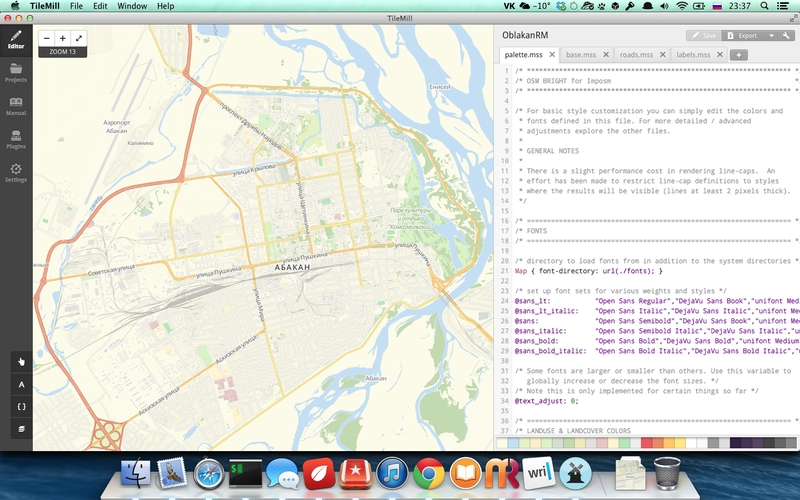

Общественная карта проблем. Отрисовка карты
Я собираюсь рассказать как сделать такую же карту, которая используется у меня в проекте. Как некоторые люди, знакомые с openstreetmap.org, могли заметить — у меня используется "своя" тема. И сходу же закину спойлеры одной строкой: прекрасный софт tilemill от mapbox.com для редактирования стилей, тема OSM Bright от mapbox.com, osm2pgsql для закидывания ГИС информации в PostgreSQL, postgis расширение для работы с ГИС информацией, PostgreSQL, базы OSM, Mbutil для распаковки экспортированного из Tilemill файла .mbtiles.

Первым шагом мы устанавливаем PostgreSQL (у меня была версия 9.3) и ГИС-расширение к нему — PostGIS (2.93). Приготавливаем базу:
postgres createuser gisuser
postgres createdb --encoding=UTF8 gis
psql -d gis -f /usr/pgsql-9.3/share/contrib/postgis-2.1/postgis.sql
psql -d gis -f /usr/pgsql-9.3/share/contrib/postgis-2.1/spatial_ref_sys.sql
Клоним osm2pgsql c его репозитория, выкачиваем нужные OSM-ки с ГИС информацией. В моём случае это были RU-KK (республика Хакасия) и RU-KYA (Красноярский Край). И запихиваем их в базу:
./osm2pgsql /root/shared/osm/RU-KK-140125.osm
./osm2pgsql /root/shared/osm/RU-KYA-140125.osm
База с ГИС информацией должна быть готова. Следующим шагом мы будем напяливать на обнажённые кости ГИС информации шкуру от OSM Bright. Качаем Tilemill, клоним тему OSM Bright с репозитория, настраиваем configure.py, запускаем make.py и эта тема должна установиться в Tilemill таким образом, что при запуске программы вы её увидите в проектах.
Если вы сделали все предыдущие шаги правильно, а я не ошибся в своей инструкции, то вы должны увидеть нормальную карту (возможно вам придётся слегка подождать, пока всё прогрузится и, к тому же, если вы загружали только некоторые области, то вам необходимо будет вручную к ним перейти).

Так как MapBox не любят номера домов, то вам придётся немного поработать, чтобы добавить их самостоятельно. Для этого мы создадим отдельный слой с номерами домов.
( SELECT way, "addr:housenumber"
FROM planet_osm_polygon
WHERE "addr:housenumber" IS NOT NULL
) AS data
Затем настроим стиль в labels.mss, после чего сохраняем проект и видим, что при увеличении 17 уровня и более, появившиеся номера домов.
/* ---- House labels ------------------------------------------ */
#housenumbers_label[zoom >= 17] {
::label {
text-name: '[addr:housenumber]';
text-face-name:@sans;
text-size: 9;
text-placement:interior;
text-min-distance: 1;
text-wrap-width: 0;
text-fill: #444;
}
}


Как только вы наиграетесь и захотите наконец-то закинуть карту к себе на любимый сервачок, то вам надо будет озаботиться экспортом вашего картографического творчества. Для этого вам нужно выбрать в меню "экспорт" тип MBTiles, выбрать необходимый регион для экспорта, нужный диапазон зума (у меня это было 13-17) и нажать на кнопку экспорта. Вуаля. У нас будет готов (рано или поздно) файл mbtiles, который вы можете распаковать при помощи утилиты Mbutil в виде графических тайлов. А потом вы можете смело прописывать на своём leaflet-скрипте путь к вашим тайлам.
L.tileLayer("http://maps.oblakan.ru/tiles/{z}/{x}/{y}.png", {
attribution: '© <a rel="nofollow" href="http://osm.org/copyright">OpenStreetMap</a> contributors'
})
Заключение
Этот способ хорош, если у вас нет денег на хостинг карт от тех же mapbox.com, а нужная вам карта охватывает небольшую область. Рендеринг карты очень требовательная операция. Например, небольшой участок, включающий Абакан, Черногорск и Саяногорск (около 100 км в длину и, допустим, 50 км в ширину), у меня на моём ноутбуке (двухядерный intel Core i5 2,4 ГГц) отрисовывалось 3 часа. А когда в первый раз я попытался отрисовать весь сибирский округ, то число было около 280 дней и с каждой минутой число становилось всё больше. Так, что, если вам нужно покрыть большой участок карты и у вас нет под рукой мощного компьютера, то вам лучше воспользоваться специализированными сервисами.